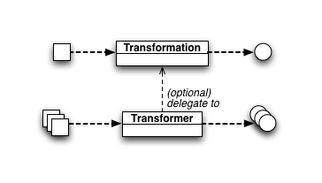
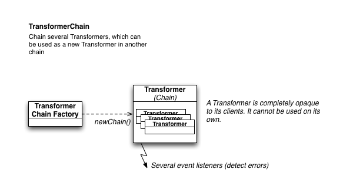
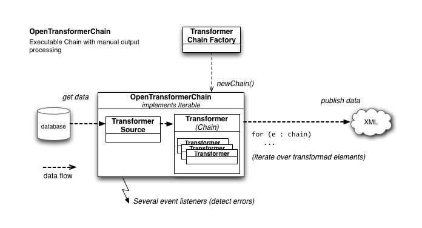
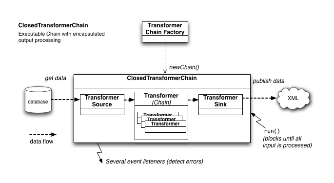

The transformer framework contains two basic transormation related classes: Transformation and Transformer. A Transformation operates on a single element while a Transformer iterates over an input collection and produces an output collection (which can be smaller, equal to or larger than the input collection). Optionally, a Transformer can delegate the transformation of a single element to a Transformation (see DefaultTransformer).
A Transformation transforms a single input or source element into a single output or target element. Atomic transformations can be instantiated directly. The TransformationChainFactory allows to combine multiple transformations to form a transformation chain.
A Transformer on the other hand transforms a collection of input elements to a collection of output elements.
A Transformation (chain) can be used in Transformer chains by wrapping it in a DefaultTransformer (see further).
A TransformerSource acts as a data provider, e.g., by getting objects from a database, for further transformation while a TransformerSink consumes the output of a transformer, e.g., by serializing the data to XML.
The TransformerChainFactory can be used to create three types of chains, shown in the figures below.
A Transformer chain is exposed as a regular Transformer that is internally composed of many Transformers. As a client cannot use a Transformer directly since you cannot set its input or query its output. A Transformer is, apart from a few events, a complete black-box for its clients. Use an OpenTransformationChain or a ClosedTransformationChain to process data.
An OpenTransformerChain allows you to attach a TransformerSource to a Transformer(Chain); the former providing input elements for the Transformer. The transformer output must be processed manually by iterating the OpenTransformerChain, which implements Iterable.
A ClosedTransformationChain adds a TransformerSink to the chain. The latter processed the transformed output automatically. This means the chain runs completely independent; just call its run() method.
A Transformation might not always be able to transform a certain input. In that case, it is allowed to throw a TransformationException. Of course, we don't want a transformer to stop processing its input elements when a single element fails to be transformed. Therefore, each Transformer should catch these exceptions (this is the case for DefaultTransformer).
Both Transformer and Open/ClosedTransformerChain expose a set of events through TransformerEventListener, TransformerSourceEventListener and TransformerSinkEventListener. Subscribing to these listeners allow the client to receive notification each time an error occurrs somewhere in the chain.